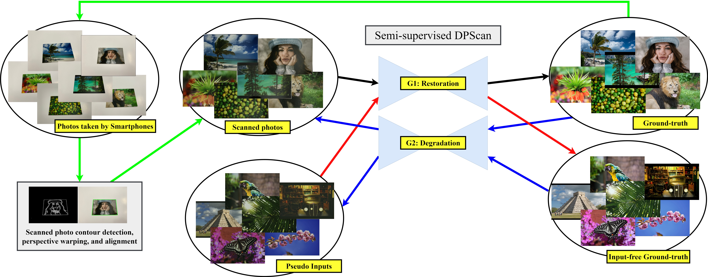
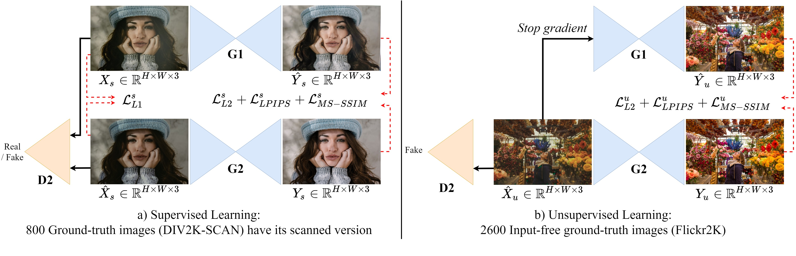
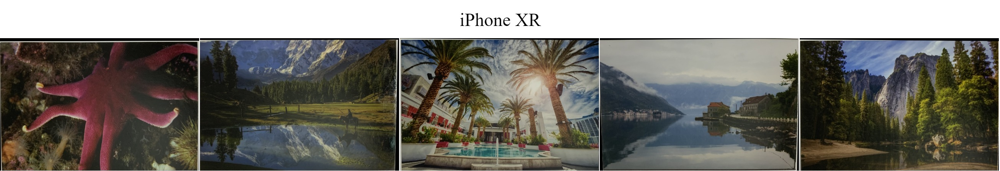
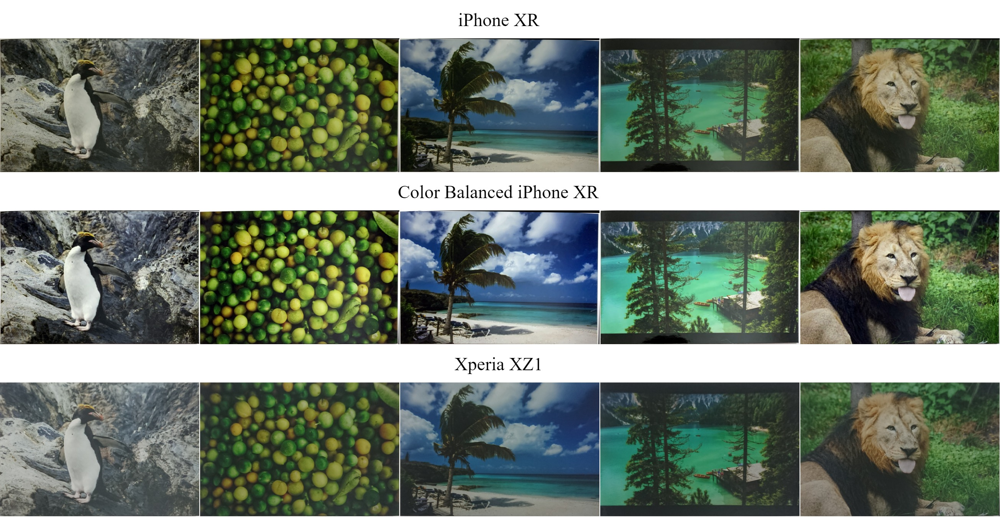
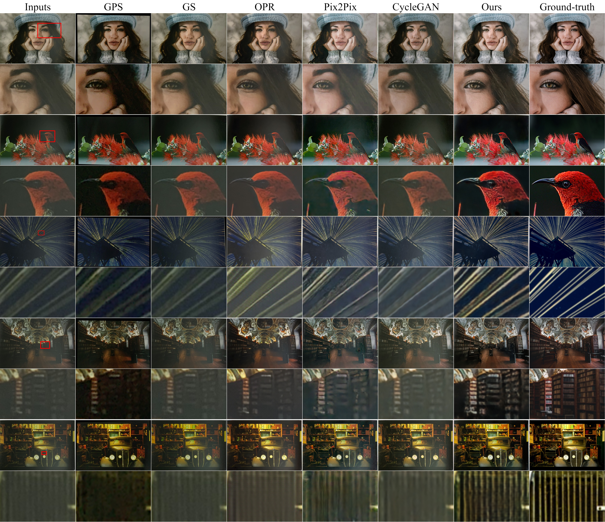
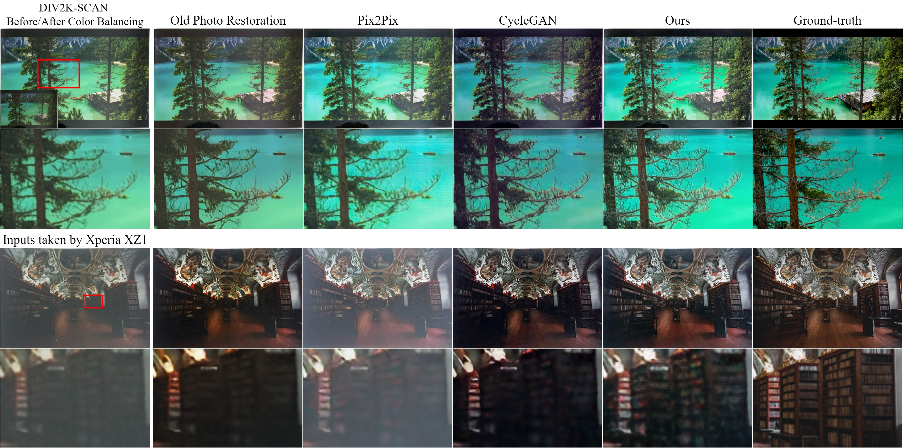

Physical photographs now can be conveniently scanned by smartphones and stored forever as a digital version,
but the scanned photos are not restored well. One solution is to train a supervised deep neural network on many digital photos
and the corresponding scanned photos. However, human annotation costs a huge resource leading to limited training data.
Previous works create training pairs by simulating degradation using image processing techniques.
Their synthetic images are formed with perfectly scanned photos in latent space. Even so, the real-world degradation
in smartphone photo scanning remains unsolved since it is more complicated due to real lens defocus, lighting conditions,
losing details via printing, various photo materials, and more. To solve these problems, we propose a Deep Photo Scan (DPScan)
based on semi-supervised learning. First, we present the way to produce real-world degradation and provide the DIV2K-SCAN dataset
for smartphone-scanned photo restoration. Second, by using DIV2K-SCAN, we adopt the concept of Generative Adversarial Networks to learn
how to degrade a high-quality image as if it were scanned by a real smartphone, then generate pseudo-scanned photos for unscanned photos.
Finally, we propose to train on the scanned and pseudo-scanned photos representing a semi-supervised approach with a cycle process as:
high-quality images --> real-/pseudo-scanned photos --> reconstructed images.
The proposed semi-supervised scheme can balance between supervised and unsupervised errors while optimizing to limit
imperfect pseudo inputs but still enhance restoration. As a result, the proposed DPScan quantitatively and qualitatively outperforms
its baseline architecture, state-of-the-art academic research, and industrial products in smartphone photo scanning.
Overall Concept
Figure: A summary of our semi-supervised Deep Photo Scan (DPScan).
We produce real-world degradation by printing the ground-truth images,
taking the digital version of printed photos using a smartphone, perspective warping, and aligning them (green).
However, that process costs a huge resource. To overcome this issue, in training, G2 learns to degrade the ground-truth images as being scanned and
synthesize pseudo inputs for input-free ground-truth images (blue).
Therefore, our G1 can learn to restore on more contexts in supervised (black) and unsupervised (red) ways representing a
semi-supervised approach for smartphone-scanned photo restoration.

Learning Approach
Figure: We present a semi-supervised learning that enables our restoration to be trained on scanned (supervised) (a) and unscanned (unsupervised) (b) photos
under strong similarity loss functions such as L2, LPIPS,
and MS-SSIM.
Errors between (a) and (b) are balanced
while optimizing to limit imperfect pseudo inputs but still enhance restoration.

DIV2K-SCAN dataset
Training data captured using iPhone XR can be downloaded at [here].

Besides photos in the same distribution as training photos, test data also consists of out-of-distribution cases such as color-balanced and taken-by-XperiaXZ1 photos.
All test cases can be downloaded at [here].

A Result

In case of Out-of-distribution

If you find our work useful, please consider citing
@misc{ho2021deep,
title={Deep Photo Scan: Semi-supervised learning for dealing with the real-world degradation in smartphone photo scanning},
author={Man M. Ho and Jinjia Zhou},
year={2021},
eprint={2102.06120},
archivePrefix={arXiv},
primaryClass={cs.CV}
}
License
This work, including the trained model, code, and dataset, is for non-commercial uses and research purposes only.